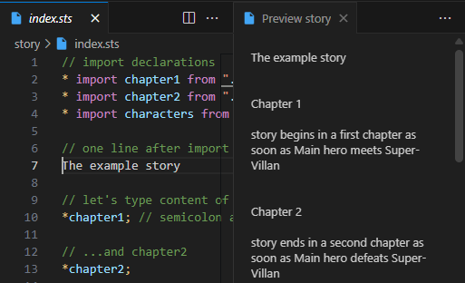
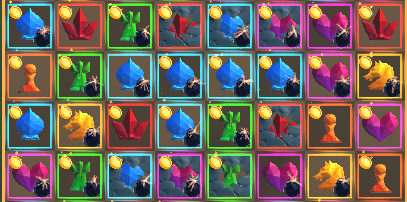
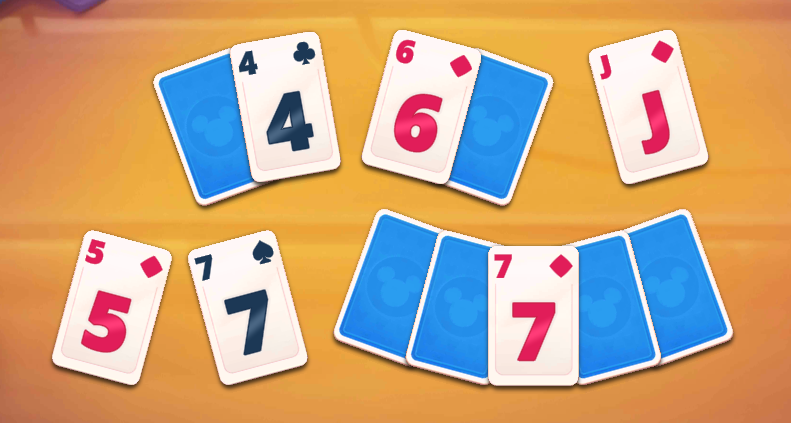

Featured Projects

StoryTailor
Open-source narrative scripting language for interactive fiction and games. Features variables, branching logic, and multi-language localization. Built in TypeScript as a VS Code extension and npm package.

Hex Terrains Framework
High-performance hex-based terrain system for Unity DOTS. Supports multi-layer data (height, biomes, humidity, etc.) and real-time in-game editing. Designed for scalable strategy and simulation games.

ChessKnight
A minimalist puzzle where players build a continuous path using chess-figures moves. Designed for calm, strategic gameplay. Developed in Unity (WebGL + Android) featuring adaptive levels, responsive UI, and lightweight performance.
Professional Work
Selected commercial projects I contributed to as part of a team. Focus on scalable systems, performance, and gameplay architecture.

Disney Solitaire
Worked as Senior Unity Developer at Superplay LTD (2023-2025) on Disney Solitaire mobile game. Adapted and re-integrated complex tutorial (FTUE) and marketing systems to support the new game’s flow, assets, and live-ops content. Managed extensive code merges, resolving thousands of conflicts per cycle and refactoring legacy systems to operate in a new architecture.

Bookful and Little Oxford
Worked as Senior Unity Developer at Inception XR - educational mobile apps for children featuring interactive books, mini-games, and AR experiences. Contributed to UI development, app-wide bug fixes, and feature support. Implemented custom UI components such as custom Layout Groups for dynamic interfaces. In Little Oxford, created an interactive handwriting mini-game that tracks a child’s finger input to teach letter formation.

Rio Match3 Party
Worked as Senior Unity Developer/Tech Lead at Plarium on Rio Match-3 Party. Contributed to a shared Match-3 framework used across multiple titles. Designed the visual and UI architecture translating algorithmic board logic into animated gameplay. Mentored junior developers, maintained core gameplay systems, and implemented shader-based visual effects for dynamic environments.
Core Skills
- C# • JavaScript • TypeScript
- Unity DOTS/ECS • Jobs • Burst • Profiling • Optimization
- Simulation & Tools Architecture • In-game Editors • Serialization • UI
- npm • VS Code Extensions • CI/CD pipelines
Contact
Email: freewebtime@gmail.com
LinkedIn: linkedin.com/in/evgeny-sidorenko-691a2569
GitHub: github.com/freewebtime
GitHub: github.com/jack-storytailor
CV (Google Docs): Yevhen Sydorenko CV.doc
CV (Pdf): Yevhen Sydorenko CV.pdf